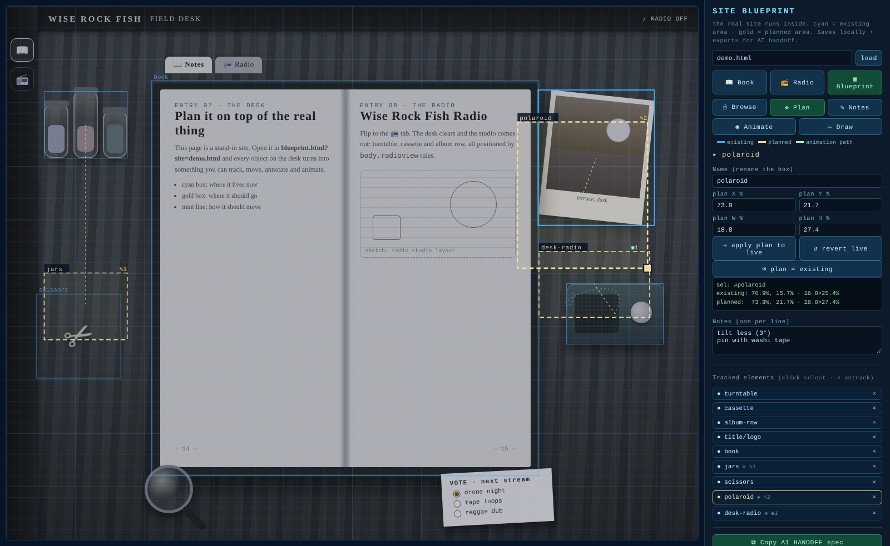
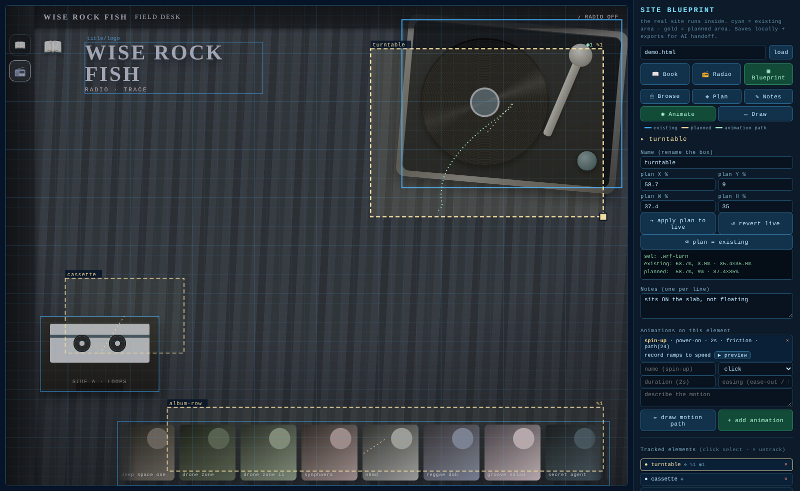
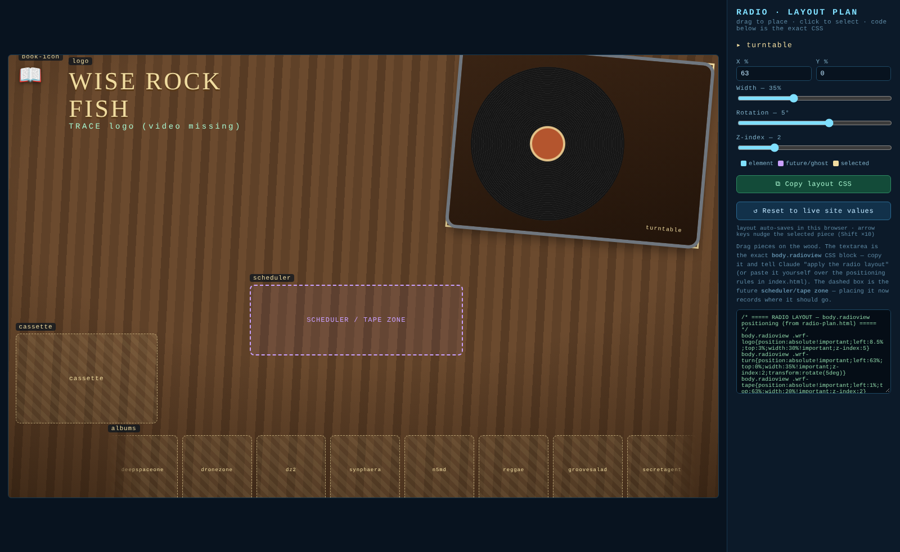
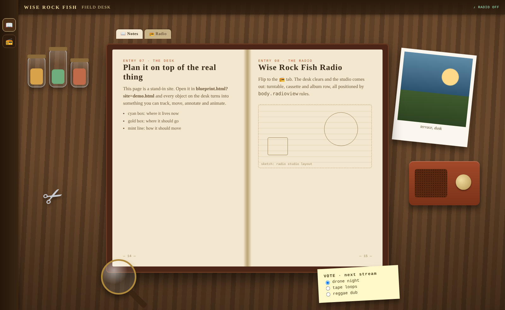
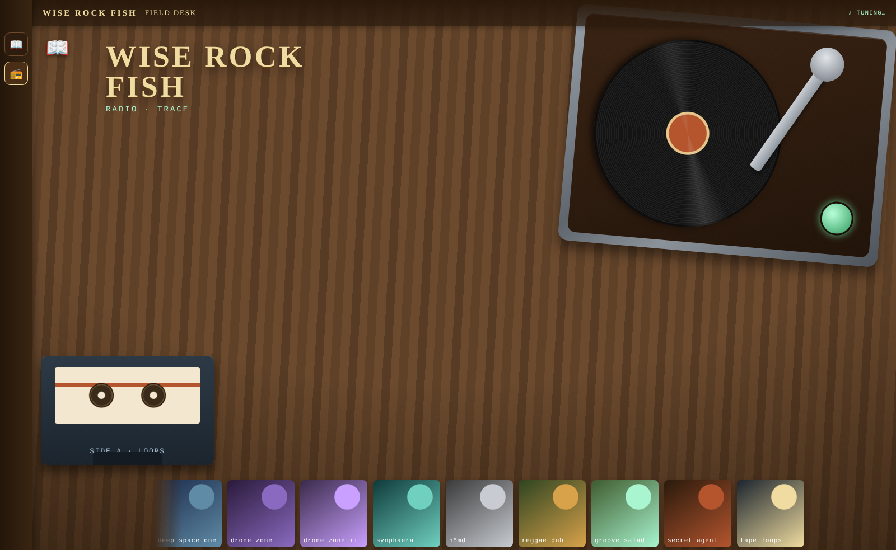

Plan your site on top of the real thing.
Your actual running page loads inside the tool. Drag where things should go, write notes, draw motion paths. Then copy a spec exact enough for a person or an AI model to apply.

Features
The plan can't drift from the page, because the page is the plan.
Real site in the frame
The page you're planning runs live in a same-origin iframe. Nothing to keep in sync, no mockup to redraw.
Existing vs planned
Cyan is the element's live geometry. Gold is where you want it: drag to move, use the corner grip to resize, or nudge with the arrow keys.
Preview in place
Push the planned rect onto the real element to see it live, then revert with one click.
Notes on anything
Attach instructions to any element. Each line goes into the handoff as its own instruction.
Animation specs
Set a name, trigger, duration and easing, then draw the motion path with a pen. ▶ plays the real element along it.
Export & import
Export the AI handoff (clipboard), JSON (download or re-import) or CSS. Everything auto-saves per page.
How it works
Four steps, no build.
Drop it in
Copy blueprint.html into your site's folder and serve the folder.
Track
Switch to ✥ Plan and click any element. It gets a cyan box at its live position.
Plan
Drag the gold box to where it should go. Add ✎ notes and ◉ animations.
Hand off
⧉ Copy the AI handoff spec. The model reads BLUEPRINT-README.md and applies it.
In this repo
Three pages, each a single HTML file.

Site Blueprint
blueprint.htmlThe planning overlay. Works on any same-origin page via ?site=.

Radio layout plan
radio-plan.htmlA smaller drag editor for the Wise Rock Fish Radio view. It emits body.radioview CSS.

Demo desk
demo.htmlA CSS-only stand-in that uses the documented selectors, so every feature works without the live site.
Book ⇄ Radio
One page, two states, both plannable.

body.radioview): the desk clears and the studio appears. The record spin uses a momentum + friction physics loop.AI handoff
Written for a model to apply with no guessing.
- Both rects per element, in viewport %, captured at a stated viewport size
- Notes verbatim, one instruction per line
- Animation specs: trigger, duration, easing, motion-path coordinates
- Raw JSON at the end as the source of truth (schema v2)
- The apply rules live in BLUEPRINT-README.md
# SITE BLUEPRINT — AI HANDOFF (v2) Site: demo.html · viewport 1180x820 ## turntable (.wrf-turn) · view:radioview existing: left 63.4% · top 0.8% · w 35.9% · h 41.0% PLANNED: left 58% · top 6% · w 38% · h 41% - NOTE: sits ON the slab, not floating - ANIMATION "spin-up": trigger=power-on duration=2s easing=friction — record ramps to speed motion-path (viewport %): [[71.2,22.4],[73,24.1],…] ## album-row (.wrf-grid) · view:radioview existing: left 14.0% · top 87.6% · w 83.0% · h 12.1% PLANNED: left 22% · top 84% · w 74% · h 12% - NOTE: shrink 10% on mobile
Run it
Any static server works.
Node (no install)
npm start # → http://localhost:8803/ npm test # parse + link checks
Python
python3 -m http.server 8803 # plan a page of your own: # /blueprint.html?site=your-page.html